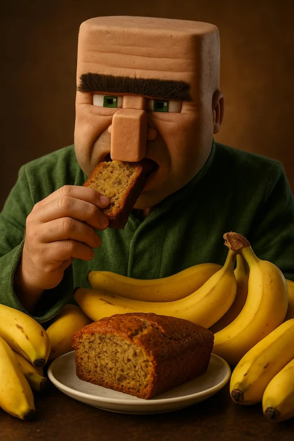

Banana Cake
This banana cake is soft, moist, and bursting with banana flavor. It's a perfect treat for tea time, dessert, or even breakfast. Easy to bake and loved by all ages!
Ingredients
- 3 ripe bananas, mashed
- 2 cups all-purpose flour
- 1 cup sugar
- 1/2 cup butter, softened
- 2 eggs
- 1 tsp baking soda
- 1/4 cup milk
- 1 tsp vanilla extract
Instructions
- Preheat oven to 350°F (175°C). Grease and flour a cake pan.
- In a bowl, cream together butter and sugar until light and fluffy.
- Add eggs one at a time, then stir in mashed bananas and vanilla.
- In another bowl, mix flour and baking soda. Add to banana mixture alternately with milk.
- Pour into prepared pan and bake for 45-50 minutes, or until a toothpick comes out clean.
- Cool before slicing. Enjoy!